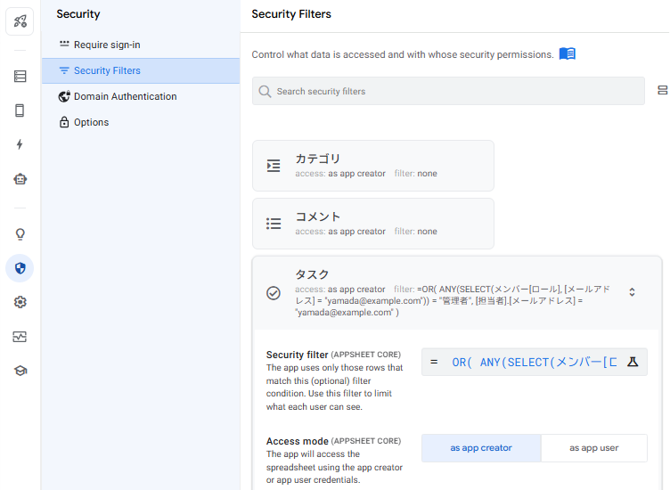
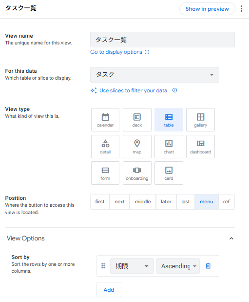
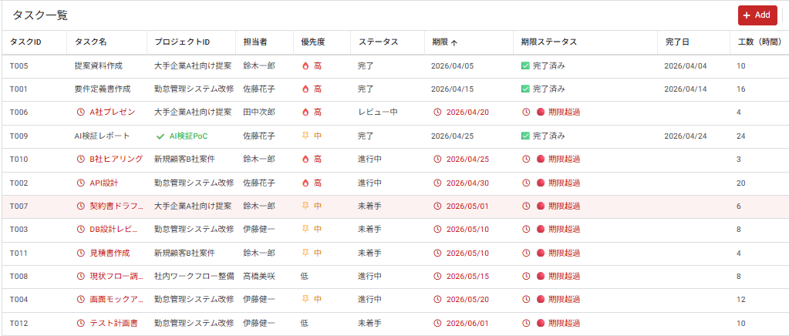
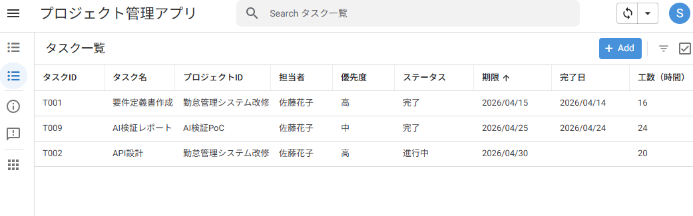

メンバー管理とSecurity Filter
3-1 Security Filterとは？ ─ アクセス制御の基本
Security Filter（セキュリティフィルター）は、ログインしているユーザーに応じて、テーブルから取得する行を自動的に絞り込む 仕組みです。中級編で学んだ Slice と似ていますが、決定的な違いがあります。
■ Slice と Security Filter の違い
| 比較項目 | Slice（中級編） | Security Filter（上級編） |
|---|---|---|
| 役割 | 表示用のサブセット | テーブル全体のアクセス制御 |
| 適用範囲 | 特定のビューだけ | テーブル全体（全ビュー共通） |
| セキュリティ | 補助的（迂回可能） | 強い制御（迂回不可） |
| データ読込 | 全件読み込んでから絞る | 最初から絞って読込（高速） |
| 主な用途 | 「申請中の休暇のみ」など状態別表示 | 「自分の担当タスクのみ」など権限別表示 |
■ Security Filter の仕組み
アカウント
メールアドレス
可否を判定
行だけ表示
■ 本章で実現するアクセス制御
👔 管理者（PM）
- 全プロジェクトが見える
- 全タスクが見える
- 全メンバーの情報が見える
- 全コメントが見える
- すべての編集が可能
👤 メンバー
- 全プロジェクトの閲覧は可能
- 自分が担当のタスクのみ 表示
- 自分のタスクのみ編集可能
- 自分のタスクのコメントのみ可
- メンバーマスタは閲覧のみ
3-2 USEREMAIL() でログインユーザーを特定
Security Filter の中心となる関数が USEREMAIL() です。これは、現在アプリにログインしている Google アカウントのメールアドレス を返します。
■ USEREMAIL() の動作
USEREMAIL()
↓
"yamada@example.com" ← ログインユーザーのアドレスたとえば、山田太郎さん（M001）でログインしているときに USEREMAIL() を呼び出すと "yamada@example.com" が返ります。佐藤花子さん（M002）でログインしていれば "sato@example.com" が返ります。
■ メンバーマスタとの照合
第2章で作成した メンバー テーブルには、各メンバーのメールアドレスが登録されています。USEREMAIL() が返したアドレスを、このテーブルの 「メールアドレス」 カラムと照合することで、ログインしているのが誰か を特定できます。
example.com"
カラム
ロール = 管理者
3-3 UserRoleカラムでロールを動的取得
毎回 Security Filter の式の中で USEREMAIL() とメンバーマスタを照合するのは大変です。そこで、「ログイン中のユーザーのロール」を1つのカラムにまとめておく 設計が便利です。これを UserRole カラム と呼びます。
■ メンバーテーブルに UserRole 用 Virtual Column を追加
メンバーテーブルに、次の Virtual Column を追加します。
| カラム名 | Type | App formula |
|---|---|---|
| IsCurrentUser | Yes/No | [メールアドレス] = USEREMAIL() |
この Virtual Column は、各行ごとに「この行のメンバーが、今ログインしている人と同じか？」を TRUE / FALSE で返します。当然、TRUE になる行は1つだけ（自分自身の行）です。
■ さらに便利な「ログイン中のユーザーレコード」を取得する式
Security Filter で実際に使う式は次のとおりです。これは、メンバーテーブルから ログインユーザーの行を1件だけ取得し、そのロールを返す 式です。
ANY(
SELECT(
メンバー[ロール],
[メールアドレス] = USEREMAIL()
)
)■ 式の解説
| 関数 | 役割 |
|---|---|
SELECT(...) | 指定した条件に合う行のリストを取得（中級編で学習） |
メンバー[ロール] | メンバーテーブルから「ロール」カラムを取り出す |
[メールアドレス] = USEREMAIL() | 行のメールアドレスがログインユーザーと一致する条件 |
ANY(...) | リストから1件取り出す（リスト → 単一値の変換） |
この式全体で、たとえば山田太郎（M001）でログインしているときは "管理者" を返し、佐藤花子（M002）でログインしているときは "メンバー" を返します。
SELECT() は常にリスト型を返すため、そのまま条件式に使えません。ANY() でリストから1件だけ取り出すことで、文字列として比較できるようになります。これは上級編で頻出するパターンです。
3-4 タスクテーブルにSecurity Filterを設定
いよいよ Security Filter を設定します。今回は タスクテーブル に対して、以下のルールを実装します。
- ① ロールが「管理者」のユーザー → 全タスクを表示
- ② ロールが「メンバー」のユーザー → 自分が担当者のタスクのみ表示
■ Security Filter の式
OR(
ANY(SELECT(メンバー[ロール], [メールアドレス] = USEREMAIL())) = "管理者",
[担当者].[メールアドレス] = USEREMAIL()
)■ 式の解説
この式は OR で2つの条件 を組み合わせています。どちらかの条件が TRUE なら、その行が表示されます。
| No. | 条件 | 意味 |
|---|---|---|
| ① | ANY(SELECT(メンバー[ロール], [メールアドレス] = USEREMAIL())) = "管理者" |
ログインユーザーが管理者なら、無条件に TRUE（全件表示） |
| ② | [担当者].[メールアドレス] = USEREMAIL() |
タスクの担当者が、ログインユーザー本人なら TRUE |
条件②の [担当者].[メールアドレス] は、タスクの「担当者」Ref から、メンバーマスタの「メールアドレス」カラムを参照しています。これも中級編で学んだ Ref を通じた別テーブル参照 です。
■ 設定手順
左メニューの 🛡 Security アイコン（盾型アイコン）をクリックします。
サブメニューから 「Security Filters」 を選択します。
右側パネルにテーブル一覧が表示されます。タスク テーブルを選択（クリックで展開）します。
「Security filter」 欄に、上記の OR 式をそのまま入力します。
右上の Save をクリックして保存します。
- Require sign-in ─ アプリ利用時のサインイン強制（オン推奨）
- Security Filters ─ 行レベルのアクセス制御（本章で使用）
- Domain Authentication ─ 特定ドメインのユーザーのみ許可
- Options ─ その他のセキュリティオプション
USEREMAIL() が空文字を返してしまい、Security Filter が正しく動作しません。

3-5 動作確認 ─ アカウント切り替えでテスト
Security Filter は ログインユーザーによって動作が変わる ため、テストには工夫が必要です。プロトタイプ状態（無料プラン）でも、次の2つの方法で動作確認できます。
■ 事前準備:タスク一覧ビューを作成
Security Filter の動作確認をするには、まず タスク一覧を表示するビュー が必要です。第2章でテーブルを取り込んだ時点では、AppSheet が自動生成したビュー(メンバー一覧など)だけが存在する状態のため、ここでタスク用のビューを手動で追加します。
左メニューの 📱 Views アイコン をクリックします。
PRIMARY NAVIGATION の 「+ Add View」 または 「+」 ボタンをクリックし、Create a new view を選択します。
次の通り設定します。
・View name:タスク一覧
・For this data:タスク
・View type:table
・Position:menu(下部メニューに表示)
View Options セクションを展開し、Sort by で 期限 を Ascending(昇順)に設定します。これで期限が近いタスクが上に表示されます。
Column order セクションで、表示する順番にカラムを追加します。おすすめの順番:
タスクID → タスク名 → プロジェクトID → 担当者 → 優先度 → ステータス → 期限 → 期限ステータス
(期限ステータスは第4章で作成する Virtual Column です。本章では未作成なので、リストに含めないでOKです)
右上の Save をクリックして保存します。プレビュー画面の下部メニューに 「タスク一覧」 アイコンが追加されているはずです。

- プロジェクト一覧(table view / プロジェクトテーブル)
- マイタスク(table view / マイタスク Slice)
- 管理者ダッシュボード(dashboard view)
■ 方法1:Security Filter の式を一時的に書き換える(推奨)
最も手軽な動作確認方法は、Security Filter の式の中の USEREMAIL() を、テストしたいメールアドレスに一時的に書き換える ことです。これにより、特定のメンバーになりすました状態で動作を検証できます。
左メニューの 🛡 Security → Security Filters を開き、タスク テーブルを選択します。
Security filter 欄の式の中で、2箇所ある USEREMAIL() の両方を 同じアドレスに書き換えます。たとえば佐藤花子さんになりすますなら、以下のように書き換えます。
OR(
ANY(SELECT(メンバー[ロール], [メールアドレス] = "sato@example.com")) = "管理者",
[担当者].[メールアドレス] = "sato@example.com"
)⚠️ 必ず2箇所両方を同じアドレスに置き換えてください。片方だけだと判定が正しく動作せず、想定した行が表示されません(管理者の動作確認なのに0件、など)。
Save をクリックして保存し、プレビュー画面の Sync(🔄) を押します。
タスク一覧を開くと、佐藤さんが担当しているタスクのみ(T001 / T002 / T009)が表示されているはずです。
他のメンバーでもテストしたい場合は、アドレスを書き換えて Save → Sync を繰り返します。動作確認が終わったら、必ず USEREMAIL() に戻して Save してください。
"sato@example.com" などのテスト用アドレスを USEREMAIL() に戻して Save してください。テスト用の式のまま本番運用すると、誰がログインしても佐藤さんのデータしか見えなくなり、業務が止まります。
■ 方法2：実際の Google アカウント切り替え
本番に近い動作を確認したい場合は、実際に 異なる Google アカウント でアプリにログインしてテストします。
事前にテスト用の Google アカウントを準備し、そのアドレスを メンバーシートに追加 しておきます。
シークレットモード（プライベートブラウジング） で AppSheet にアクセスし、テスト用アカウントでログインします。
アプリを開いてタスク一覧を確認します。そのアカウントが担当しているタスクだけが表示されることを確認します。
■ 期待される動作
以下の6パターンで USEREMAIL() の部分(2箇所両方)を書き換えてテストし、想定通りの結果になるか確認します。
| ログインユーザー | ロール | 表示されるタスク |
|---|---|---|
| yamada@example.com | 管理者 | 全12件のタスク |
| tanaka@example.com | 管理者 | 全12件のタスク |
| sato@example.com | メンバー | T001 / T002 / T009（3件 ─ 担当者がM002のもの） |
| suzuki@example.com | メンバー | T005 / T007 / T010 / T011（4件 ─ 担当者がM003のもの） |
| ito@example.com | メンバー | T003 / T004 / T012（3件 ─ 担当者がM005のもの） |
| takahashi@example.com | メンバー | T008（1件 ─ 担当者がM006のもの） |
3-6 動作確認とまとめ
■ 確認チェックリスト
- メンバーテーブルに IsCurrentUser（Virtual Column）が追加されている
- タスク一覧 ビュー（Table View）が作成され、下部メニューに表示されている
- タスクテーブルの Security フィルター に OR 式が設定されている
- Security Filter の式の USEREMAIL() を管理者アドレス（yamada@example.com / tanaka@example.com）に書き換えると、タスク一覧に全12件のタスクが表示される
- メンバーユーザー（sato）に切り替えると、自分担当のタスク（T001 / T002 / T009）のみ表示される
- メンバーユーザー（suzuki）に切り替えると、担当タスク（T005 / T007 / T010 / T011）のみ表示される
- プロジェクトテーブルとコメントテーブルには Security Filter が設定されていない（全員が閲覧可能）
■ プレビューで確認


■ 第3章のまとめ（中級編との違い）
| No. | 上級編で新しく扱ったポイント | 使った仕組み |
|---|---|---|
| 1 | ログインユーザーの取得 | USEREMAIL() 関数 |
| 2 | ロールの動的取得 | ANY(SELECT(...)) でリスト→単一値 |
| 3 | テーブル全体の表示制御 | Security フィルター（Slice より強力） |
| 4 | 複数条件の組み合わせ | OR() で「管理者は全件／メンバーは自分のみ」 |
| 5 | ユーザー切り替えテスト | Security Filter の式を一時的に書き換え／シークレットモードで別アカウントログイン |
USEREMAIL() でログインユーザーを特定し、メンバーマスタと照合することで、管理者は全件・メンバーは自分の担当のみ という動的なデータ表示を実現しました。次の第4章では、SELECT / FILTER / COUNT などの高度な関数を駆使して、プロジェクトの進捗率を自動計算 する仕組みを作ります。